All-pass system demo
Demonstration of all-pass systems and using all-pass system to make a notch filter by placing it in parallel with a direct path.
This type of system is used in the 'Phaser'. See Chapter 4 of 'Audio Effects ...' by Reiss and McPherson.
Ivan Selesnick
Contents
Define the flip function
flip = @(x) x(end:-1:1)
flip =
function_handle with value:
@(x)x(end:-1:1)
All-pass system transfer function
H(z) = B(z)/A(z) is allpass if coefficients of B(z) are the reverse-ordered coefficients of A(z)
% This is a first-order allpass system a = [5 -4] b = flip(a) [H, om] = freqz(b, a); % See that |H(om)| = 1 figure(1) clf plot(om, abs(H)) title('|H(\omega)|') xlabel('Frequency (\omega)') ylim([0 2]) xlim([0 pi])
a =
5 -4
b =
-4 5
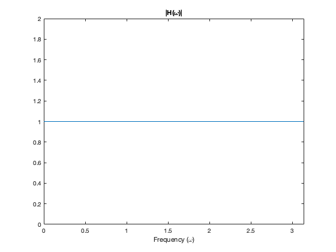 The phase response (radians)
figure(1) clf plot(om, angle(H)) title('\angle H(\omega)') xlabel('Frequency (\omega)') xlim([0 pi])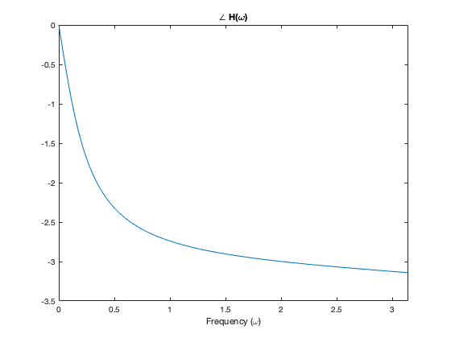
The phase response (radians/pi)
figure(1) clf plot(om, angle(H)/pi) title('\angle H(\omega) / \pi') xlabel('Frequency (\omega)') xlim([0 pi]) % See that at om = pi, angle(H) = -pi. % That makes sense because H(-1) must be a real number. % Since H is allpass, H(-1) must be 1 or -1. % Here H(-1) = -1 since angle(H) = -pi.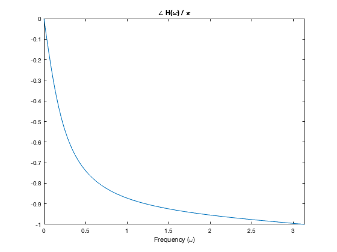
Pole-zero plot
The zeros are the reciprocals of the poles
zplane(b,a)
roots(b)
roots(a)
% reciprocals!
ans =
1.2500
ans =
0.8000
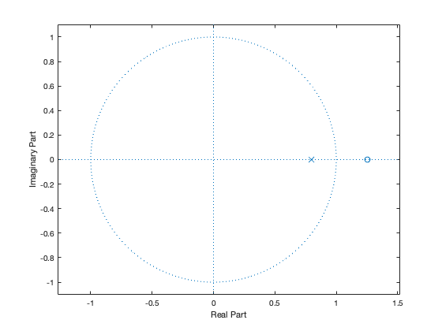 2nd-order all-pass
a = [5 -4 3] b = flip(a) [H, om] = freqz(b, a); plot(om, abs(H)) % Verify that |H(om)| = 1 title('|H(\omega)|') xlabel('Frequency (\omega)') ylim([0 2]) xlim([0 pi])
a =
5 -4 3
b =
3 -4 5
A jump in the phase by 2pi is not a true discontinuity
plot(om, angle(H)/pi) title('\angle H(\omega) / \pi') xlabel('Frequency (\omega)') xlim([0 pi])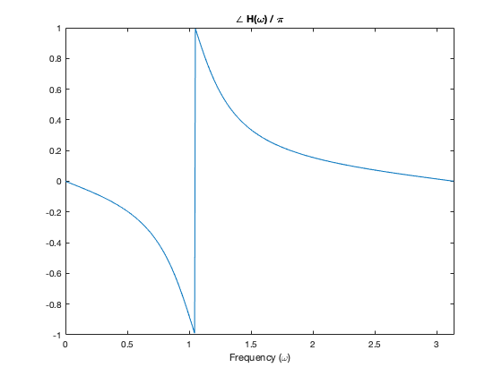
Remove jumps by 2pi using the 'unwrap' function. (Unwrap the phase)
plot(om, unwrap(angle(H))/pi) title('\angle H(\omega) / \pi') xlabel('Frequency (\omega)') xlim([0 pi]) % Notice now that at om = pi the angle is -2pi, % so H(-1) = 1. % Also note that the angle is -pi at some frequency om1 % between 0 and pi. So H(om1) = -1 at that frequency. % At that frequency, an input sine wave will be negated.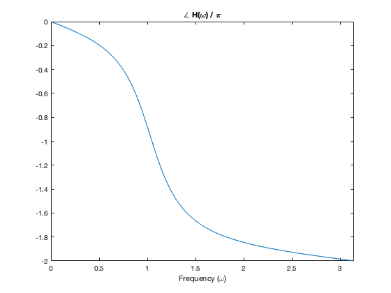
pole-zero diagram - complex poles and zeros. Observe reciprocal property (zeros are the reciprocals of the poles)
zplane(b,a)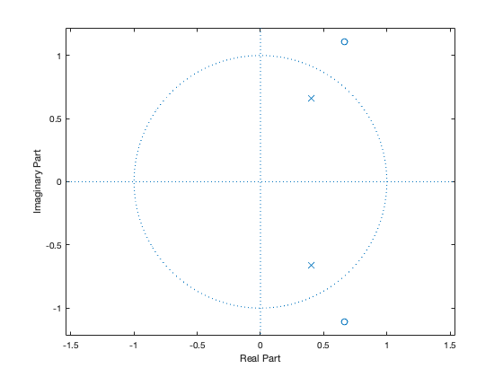
Order-3 all-pass system
a = [5 -4 3 -2] b = flip(a) [H, om] = freqz(b, a); plot(om, abs(H)) % Observe |H(om)| = 1 title('|H(\omega)|') xlabel('Frequency (\omega)') ylim([0 2]) xlim([0 pi])
a =
5 -4 3 -2
b =
-2 3 -4 5
plot(om, unwrap(angle(H))/pi) title('\angle H(\omega) / \pi') xlabel('Frequency (\omega)') xlim([0 pi]) % Notice now that at om = pi the angle is -3pi, % therefore H(-1) = -1. % Also note that the angle is -pi and -2pi at two frequencies % between 0 and pi. So H(-1) = -1 and H(-1) = 1 at those frequency. % Note that the phase is monotonically decreasing!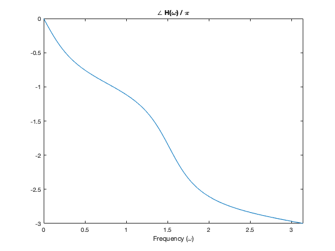
Order-4 all-pass system
a = [5 -4 3 -2 1] b = flip(a) [H, om] = freqz(b, a); plot(om, unwrap(angle(H))/pi) title('\angle H(\omega) / \pi') xlabel('Frequency (\omega)') xlim([0 pi]) % Notice now that at om = pi the angle is -4pi, % therefore H(-1) = 1. % Since the phase is *monotonically decreasing*, % it passes through -pi, -2pi, -3pi at three % frequencies between om = 0 and om = pi.
a =
5 -4 3 -2 1
b =
1 -2 3 -4 5
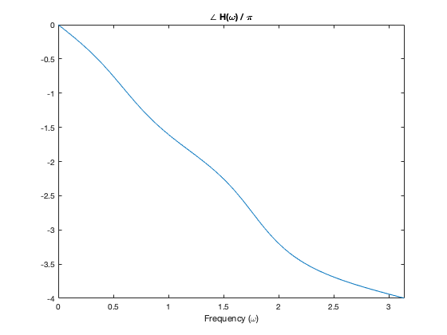 All-pass + Direct path
Consider a system composed of an all-pass system and a direct path (in parrallel). The total transfer function is G(z) = H(z) + 1 = B(z)/A(z) + 1 where B(z)/A(z) is the all-pass system. What does the freuqency response H look like and why?
Id = ones(size(H)); % Frequency response of direct path % Order-1 example a = [5 -4] b = flip(a) [H, om] = freqz(b, a); plot(om, abs( Id + H ) ); title('|1 + H(\omega)|') xlabel('Frequency (\omega)') ylim([0 2]) xlim([0 pi]) % The frequency response is a low-pass filter % with a null at om = pi. % That can be predicted since the all-pass filter % is -1 at om = pi. They add to zero.
a =
5 -4
b =
-4 5
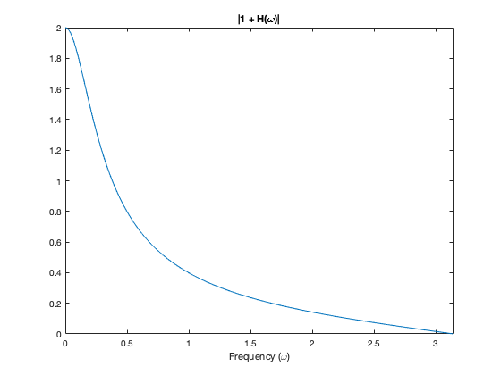 Order-2 example
a = [5 -4 3] b = flip(a) [H, om] = freqz(b, a); plot(om, abs( Id + H ) ); title('|1 + H(\omega)|') xlabel('Frequency (\omega)') ylim([0 3]) xlim([0 pi]) % Now the total system is a notch filter with a null. % Where is the null? % It is at the frequency where the all-pass filter is -1. % At om = pi, the frequency response of the total system % is 2 because the all-pass system is 1 at that frequency % so it adds to the direct path.
a =
5 -4 3
b =
3 -4 5
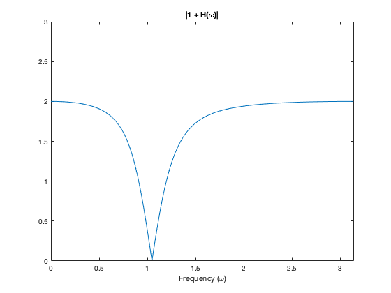 plot(om, unwrap(angle(H))/pi, om, abs(Id + H)) grid legend('\angle [H(\omega)] / \pi', '|1 + H(\omega)|') xlabel('Frequency (\omega)') xlim([0 pi]) ylim([-3 3]) % Note that the null in the frequency response is % at the frequency where the phase of the all-pass % system is -pi.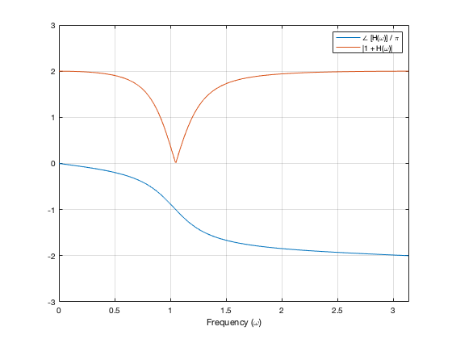
Order-3 example
a = [5 -4 3 -2] b = flip(a) [H, om] = freqz(b, a); plot(om, abs( Id + H ) ); title('|1 + H(\omega)|') xlabel('Frequency (\omega)') ylim([0 3]) xlim([0 pi]) % Now the frequency response of the total system % has a null and a gain of 2 at two different frequencies. % It also has a null at om = pi. What are these frequencies?
a =
5 -4 3 -2
b =
-2 3 -4 5
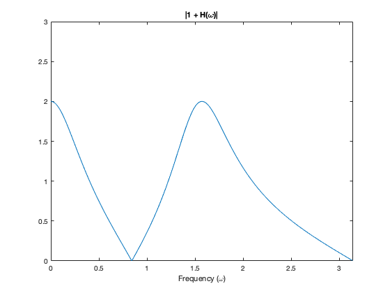 plot(om, unwrap(angle(H))/pi, om, abs(Id + H)) legend('\angle [H(\omega)] / \pi', '|1 + H(\omega)|') xlabel('Frequency (\omega)') grid xlim([0 pi]) ylim([-3 3]) % The two nulls are where the phase of the all-pass % system are equal to -pi and -3pi (ODD multiplies of pi). % At those frequencies the all-pass filter is -1 % so it cancels the direct path. % The point where the total frequency response has a gain of 1 % is where the phase of the all-pass filter is -2pi (EVEN multiples % of pi). At these frequencies, the all-pass system is +1 % so it adds to the direct path.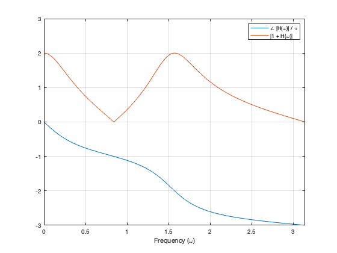
Order-4 example
a = [5 -4 3 -2 1] b = flip(a) [H, om] = freqz(b, a); plot(om, unwrap(angle(H))/pi, om, abs(Id + H)) legend('\angle [H(\omega)] / \pi', '|1 + H(\omega)|') xlabel('Frequency (\omega)') xlim([0 pi]) ylim([-4 3]) grid % There are two nulls; they are where the all-pass % system is -1, which is where the phase of the all-pass % system is an ODD multiple of pi. % Where the phase of the all-pass system is an EVEN % mulitple of pi, the all-pass frequency response is +1, % so it ADDS to the direct path, and the total gain is 2.
a =
5 -4 3 -2 1
b =
1 -2 3 -4 5
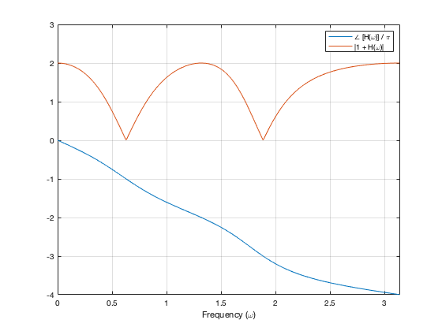 Delay + all-pass system.
A delay is a special case of an all-pass system. If the all-pass system is a delay, i.e., H(z) = B(z)/A(z) = z^(-10), then what do you get when you put it in parallel with a direct path? Lets see the frequency response of G(z) = H(z) + 1 = z^(-10) + 1
H = exp( - 1j * 10 * om); % frequency response of delay system plot(om, unwrap(angle(H))/pi, om, abs(Id + H)) legend('\angle [H(\omega)] / \pi', '|1 + H(\omega)|') xlabel('Frequency (\omega)') xlim([0 pi]) set(gca, 'xtick', 0:pi/10:pi) grid % The frequency response has equally space nulls. Why? % Because the phase of the delay is a straight line -- it pass through % ODD multipleis of pi at equally spaced points.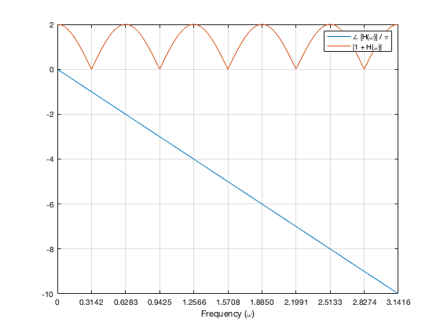